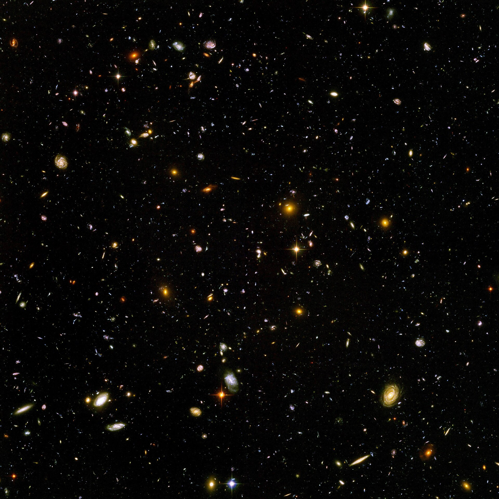

Matahari
Bintang di pusat tata surya yang memegang 99,86 persen massa seluruh sistem. Di intinya, hidrogen diubah menjadi energi pada suhu sekitar 15 juta derajat Celsius.
Diameter 1,39 jt km • suhu inti ~15 jt °C

Tata surya adalah satu sistem besar yang diikat gravitasi Matahari. Isinya bukan cuma delapan planet: ada lima planet katai resmi, ratusan bulan, jutaan asteroid, dan komet yang datang dari tepi terjauh sistem ini.
Semuanya terbentuk sekitar 4,6 miliar tahun lalu dari awan gas dan debu raksasa yang runtuh karena gravitasinya sendiri. Bagian tengahnya menyala menjadi Matahari, sisa material di sekitarnya menggumpal menjadi planet dan benda-benda kecil lainnya.
Tata surya tidak berhenti di Neptunus. Masih ada Sabuk Kuiper dan Awan Oort yang jauh lebih besar, dan cahaya Matahari butuh lebih dari satu tahun untuk mencapai tepi terluar Awan Oort.
Bintang
Matahari, bintang katai kuning di pusat tata surya dan sumber hampir semua energi di dalamnya.
Diameter Matahari
Sekitar 109 kali diameter Bumi. Lebih dari satu juta planet Bumi bisa muat di dalamnya.
Planet Katai
Pluto, Eris, Haumea, Makemake, dan Ceres, yang diakui resmi oleh IAU.
Asteroid
Jumlah asteroid yang sudah diketahui dan dikatalogkan, sebagian besar tinggal di sabuk asteroid.
Klik tombol putar untuk menonton video Solar System 101 dari National Geographic, langsung di halaman ini.
Solar System 101 • National Geographic
Video ini menjelaskan asal-usul tata surya, delapan planetnya, bulan, dan asteroid. Sumber: kanal YouTube National Geographic.
Gunakan tombol filter untuk melihat isi tata surya berdasarkan kelompoknya.
Bintang di pusat tata surya yang memegang 99,86 persen massa seluruh sistem. Di intinya, hidrogen diubah menjadi energi pada suhu sekitar 15 juta derajat Celsius.
Diameter 1,39 jt km • suhu inti ~15 jt °C
Cincin batuan di antara orbit Mars dan Jupiter. Ini sisa bahan planet yang tidak pernah sempat menyatu, salah satunya karena tarikan gravitasi Jupiter.
Jarak 2,2–3,2 SA • objek terbesar: Ceres
Bola es dan debu yang mengorbit Matahari. Kalau mendekat, esnya menguap dan membentuk ekor bercahaya. Komet Halley yang terkenal muncul sekitar 76 tahun sekali.
Ekor bisa jutaan km • Halley: terakhir 1986, kembali 2061
Satu benda, tiga nama. Selagi melayang di ruang angkasa namanya meteoroid, saat terbakar di atmosfer jadi meteor atau bintang jatuh, dan kalau sisanya sampai ke tanah disebut meteorit.
Meteor melesat 11–72 km per detik
Satelit alami Bumi dan penyebab pasang surut air laut. Bulan juga satu-satunya tempat di luar Bumi yang pernah diinjak manusia, lewat misi Apollo 11 pada 1969.
Jarak 384.400 km • diameter 3.474 km
Pluto, Eris, Haumea, Makemake, dan Ceres. Bentuknya bulat seperti planet, tapi orbitnya belum bersih dari benda lain, jadi sejak 2006 kelompok ini dipisah dari planet.
5 yang resmi • Pluto: diameter 2.377 km
Wilayah berbentuk donat raksasa di luar orbit Neptunus, penuh benda es. Pluto tinggal di sini, dan banyak komet periode pendek juga berasal dari sini.
Sekitar 30–55 SA dari Matahari
Kulit bola benda es yang mengelilingi seluruh tata surya, batas terluar pengaruh gravitasi Matahari. Belum pernah teramati langsung, tapi diyakini jadi sumber komet periode panjang.
Sampai ~100.000 SA • belum teramati langsung
Belum ada isi pada kelompok ini.
Situs-situs resmi dan gratis buat belajar tata surya lebih dalam. Semua link membuka tab baru.
Halaman resmi NASA tentang tata surya: data tiap planet, misi yang sedang berjalan, dan berita terbarunya.
Buka situs →Simulasi 3D interaktif gratis dari NASA. Bisa memutar dan memperbesar tata surya, mengikuti wahana antariksa, dan memajukan atau memundurkan waktu dari 1950 sampai 2050.
Buka situs →Tonton Solar System 101 dari National Geographic langsung di YouTube, kalau mau sekalian lihat video 101 lainnya seperti Sun 101 dan Moon 101.
Buka situs →Perpustakaan foto dan video resmi NASA. Semua foto asli luar angkasa di website ini juga berasal dari koleksi seperti ini dan bebas dipakai.
Buka situs →Planetarium gratis untuk laptop. Menampilkan langit malam persis seperti aslinya dari lokasimu, lengkap dengan planet dan rasi bintang.
Buka situs →Badan Riset dan Inovasi Nasional, lembaga yang menaungi riset antariksa Indonesia, penerus LAPAN. Di sini ada info satelit dan penelitian antariksa dalam negeri.
Buka situs →Klik tombol di bawah untuk menampilkan fakta tata surya secara acak.